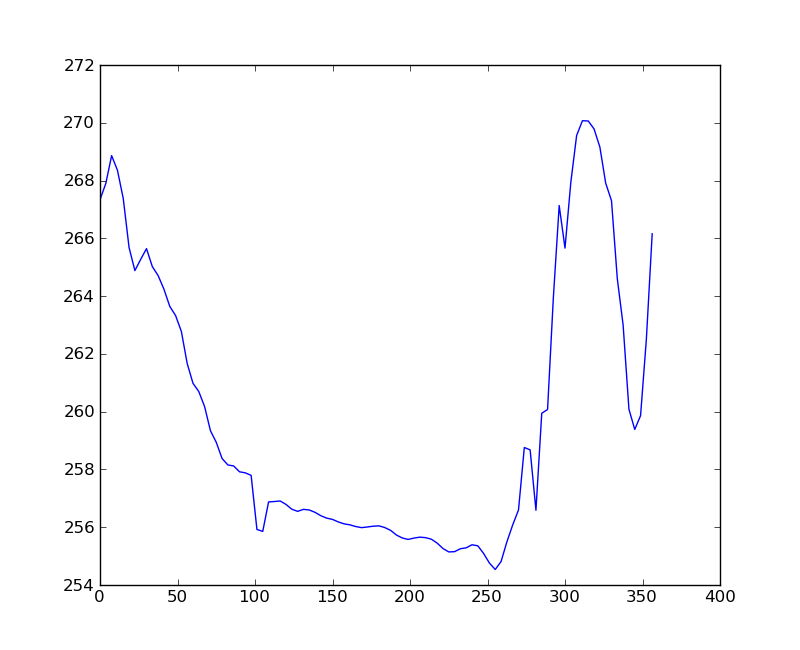
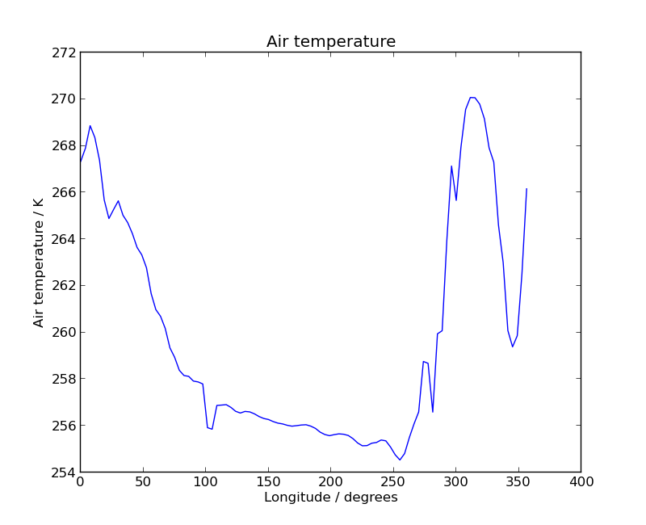
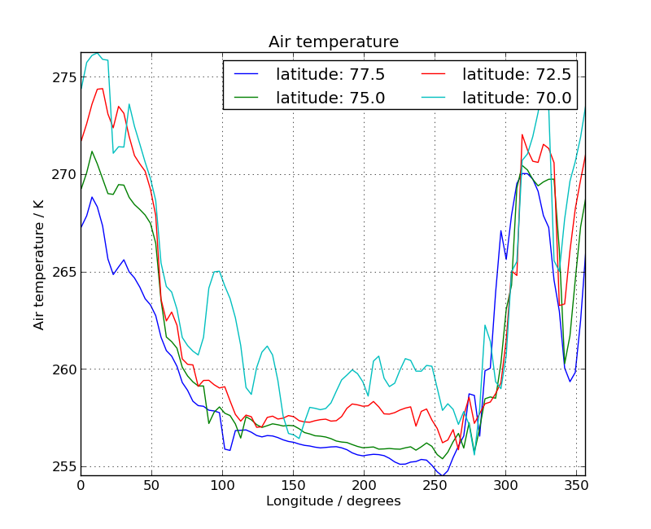
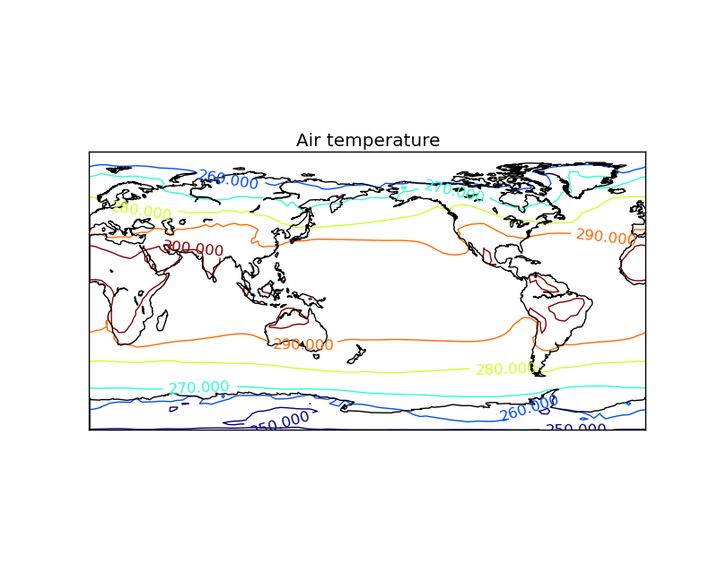
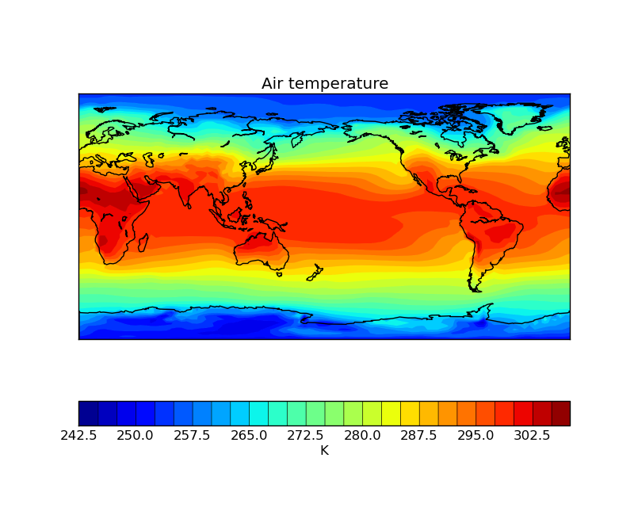
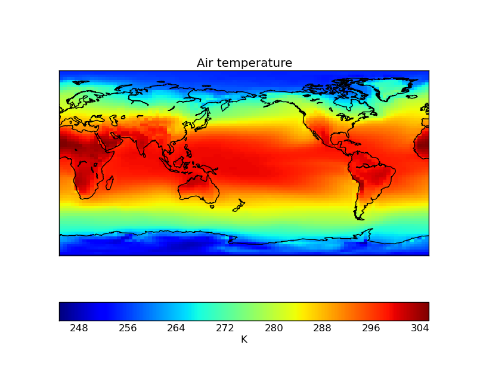

Iris 0.9
Iris utilises the power of Python’s Matplotlib package in order to generate high quality, production ready 1D and 2D plots. The functionality of the Matplotlib pyplot module has been extended within Iris to facilitate easy visualisation of a cube’s data.
Matplotlib’s pyplot has been modelled on the MATLAB framework, therefore users of MATLAB may find a degree of familiarity with the interface.
A simple line plot can created using the matplotlib.pyplot.plot() function:
import matplotlib.pyplot as plt
plt.plot([1, 2, 2.5])
plt.show()
This code will automatically create a figure with appropriate axes for the plot and show it on screen. The call to plt.plot([1, 2, 2.5]) will create a line plot with appropriate axes for the data (x=0, y=1; x=1, y=2; x=2, y=2.5). The call to plt.show() tells Matplotlib that you have finished with this plot and that you would like to visualise it in a window. This is an example of using matplotlib in non-interactive mode.
There are two modes of rendering within Matplotlib; interactive and non-interactive.
The previous example was non-interactive as the figure is only rendered after the call to plt.show(). Rendering plots interactively can be achieved by changing the interactive mode:
import matplotlib.pyplot as plt
plt.interactive(True)
plt.plot([1, 2, 2.5])
In this case the plot is rendered automatically with no need to explicitly call matplotlib.pyplot.show() after plt.plot. Subsequent changes to your figure will be automatically rendered in the window.
The current rendering mode can be determined as follows:
import matplotlib.pyplot as plt
print plt.isinteractive()
Note
For clarity, each example includes all of the imports required to run on its own; when combining examples such as the two above, it would not be necessary to repeat the import statement more than once:
import matplotlib.pyplot as plt
plt.interactive(True)
plt.plot([1, 2, 2.5])
print plt.isinteractive()
Interactive mode does not clear out the figure buffer, so figures have to be explicitly closed when they are finished with:
plt.close()
Interactive mode sometimes requires an extra draw command to update all changes, which can be done with:
plt.draw()
For the remainder of this tutorial we will work in non-interactive mode, so ensure that interactive mode is turned off with:
plt.interactive(False)
The matplotlib.pyplot.savefig() function is similar to plt.show() in that they are both non-interactive visualisation modes. As you might expect, plt.savefig saves your figure as an image:
import matplotlib.pyplot as plt
plt.plot([1, 2, 2.5])
plt.savefig('plot123.png')
The filename extension passed to the matplotlib.pyplot.savefig() function can be used to control the output file format of the plot (keywords can also be used to control this and other aspects, see matplotlib.pyplot.savefig()).
Some of the formats which are supported by plt.savefig:
Format Type Description EPS Vector Encapsulated PostScript Vector Portable Document Format PNG Raster Portable Network Graphics, a format with a lossless compression method PS Vector Post Script, ideal for printer output SVG Vector Scalable Vector Graphics, XML based
The Iris modules iris.quickplot and iris.plot extend the Matplotlib pyplot interface by implementing thin wrapper functions. These wrapper functions simply bridge the gap between an Iris cube and the data expected by standard Matplotlib pyplot functions. This means that all Matplotlib pyplot functionality, including keyword options, are still available through the Iris plotting wrapper functions.
As a rule of thumb:
- if you wish to do a visualisation with a cube, use iris.plot or iris.quickplot.
- if you wish to show, save or manipulate any visualisation, including ones created with Iris, use matplotlib.pyplot.
- if you wish to create a non cube visualisation, also use matplotlib.pyplot.
The iris.quickplot module is exactly the same as the iris.plot module, except that quickplot will add a title, x and y labels and a colorbar where appropriate.
Note
In all subsequent examples the matplotlib.pyplot, iris.plot and iris.quickplot modules are imported as plt, iplt and qplt respectively in order to make the code more readable. This is equivalent to:
import matplotlib.pyplot as plt
import iris.plot as iplt
import iris.quickplot as qplt
The simplest 1D plot is achieved with the iris.plot.plot() function. The syntax is very similar to that which you would provide to Matplotlib’s equivalent matplotlib.pyplot.plot() and indeed all of the keyword arguments are equivalent:
import matplotlib.pyplot as plt
import iris
import iris.plot as iplt
fname = iris.sample_data_path('air_temp.pp')
temperature = iris.load_strict(fname)
# Take a 1d slice using array style indexing.
temperature_1d = temperature[5, :]
iplt.plot(temperature_1d)
plt.show()

For more information on how this example reduced the 2D cube to 1 dimension see the previous section entitled Reducing a Cube.
Note
As well as providing simple Matplotlib wrappers, Iris also has a iris.quickplot module, which adds extra cube based meta-data to a plot. For example, the previous plot can be improved quickly by replacing iris.plot with iris.quickplot:
import matplotlib.pyplot as plt
import iris
import iris.quickplot as qplt
fname = iris.sample_data_path('air_temp.pp')
temperature = iris.load_strict(fname)
# Take a 1d slice using array style indexing.
temperature_1d = temperature[5, :]
qplt.plot(temperature_1d)
plt.show()

A multi-lined (or over-plotted) plot, with a legend, can be achieved easily by calling iris.plot.plot() or iris.quickplot.plot() consecutively and providing the label keyword to identify it. Once all of the lines have been added the matplotlib.pyplot.legend() function can be called to indicate that a legend is desired:
"""
Multi-line temperature profile plot
^^^^^^^^^^^^^^^^^^^^^^^^^^^^^^^^^^^
"""
import matplotlib.pyplot as plt
import iris
import iris.quickplot as qplt
def main():
fname = iris.sample_data_path('air_temp.pp')
# Load exactly one cube from the given file
temperature = iris.load_strict(fname)
# We only want a small number of latitudes, so filter some out using "extract".
temperature = temperature.extract(iris.Constraint(latitude=lambda cell: 68 <= cell < 78))
for cube in temperature.slices('longitude'):
# Create a string label to identify this cube (i.e. latitude: value)
cube_label = 'latitude: %s' % cube.coord('latitude').points[0]
# Plot the cube, and associate it with a label
qplt.plot(cube, label=cube_label)
# Add the legend with 2 columns
plt.legend(ncol=2)
# Put a grid on the plot
plt.grid(True)
# tell matplotlib not to extend the plot axes range to nicely rounded numbers.
plt.axis('tight')
# Finally, show it.
plt.show()
if __name__ == '__main__':
main()

This example of consecutive qplt.plot calls coupled with the Cube.slices() method on a cube shows the temperature at some latitude cross-sections.
Note
The previous example uses the if __name__ == "__main__" style to run the desired code if and only if the script is run from the command line.
This is a good habit to get into when writing scripts in Python as it means that any useful functions or variables defined within the script can be imported into other scripts without running all of the code and thus creating an unwanted plot. This is discussed in more detail at http://effbot.org/pyfaq/tutor-what-is-if-name-main-for.htm.
In order to run this example, you will need to copy the code into a file and run it using python2.7 my_file.py.
Whenever a 2D plot is created and the x and y coordinates are longitude and latitude a mpl_toolkits.basemap.Basemap instance is created which can be accessed with the iris.plot.gcm() function.
Given the current map, you can draw meridians, parallels and coastlines amongst other things.
A simple contour plot of a cube can be created with either the iris.plot.contour() or iris.quickplot.contour() functions:
import matplotlib.pyplot as plt
import iris
import iris.plot as iplt
import iris.quickplot as qplt
fname = iris.sample_data_path('air_temp.pp')
temperature_cube = iris.load_strict(fname)
# Add a contour, and put the result in a variable called contour.
contour = qplt.contour(temperature_cube)
# Get the map created by contourf
current_map = iplt.gcm()
# Add coastlines to the map
current_map.drawcoastlines()
# Add contour labels based on the contour we have just created
plt.clabel(contour)
plt.show()

Similarly a filled contour plot of a cube can be created with the iris.plot.contourf() or iris.quickplot.contourf() functions:
import matplotlib.pyplot as plt
import iris
import iris.quickplot as qplt
import iris.plot as iplt
fname = iris.sample_data_path('air_temp.pp')
temperature_cube = iris.load_strict(fname)
# Draw the contour with 25 levels
qplt.contourf(temperature_cube, 25)
# Get the map created by contourf
current_map = iplt.gcm()
# Add coastlines to the map
current_map.drawcoastlines()
plt.show()

Both contour and contourf are point based visualisations in that for both the x and y plot axes the coordinates must have Coord.points. In some situations the underlying coordinates are not point based and instead are better represented with a continuous bounded coordinate, in which case a “block” plot may be more appropriate. Continuous block plots can be achieved with either iris.plot.pcolormesh() or iris.quickplot.pcolormesh():
import matplotlib.pyplot as plt
import iris
import iris.quickplot as qplt
import iris.plot as iplt
fname = iris.sample_data_path('air_temp.pp')
temperature_cube = iris.load_strict(fname)
# put bounds on the latitude and longitude coordinates
temperature_cube.coord('latitude').guess_bounds()
temperature_cube.coord('longitude').guess_bounds()
# Draw the contour with 25 levels
qplt.pcolormesh(temperature_cube)
# Get the map created by pcolormesh
current_map = iplt.gcm()
# Add coastlines to the map
current_map.drawcoastlines()
plt.show()
